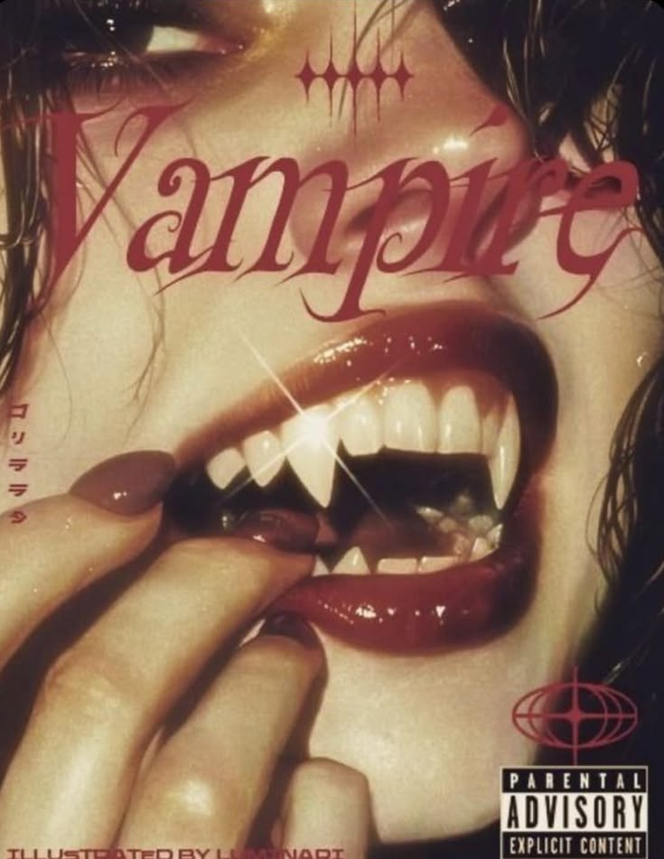
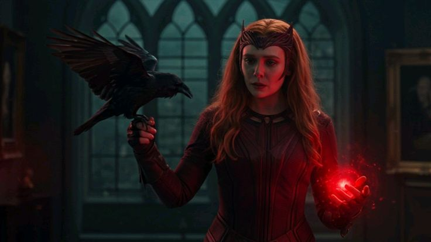

Música
BTS em Copacabana? Confira os rumores
Veja o que está por trás dos rumores que tomaram conta das redes.
Ler matéria
Entenda os rumores que estão movimentando os fãs e o que já se sabe sobre uma possível apresentação do grupo no Rio de Janeiro.
Ler matéria
Veja o que está por trás dos rumores que tomaram conta das redes.
Ler matéria
O evento reúne música, cultura e experiências para o público.
Ler matéria
Uma nova matéria para explorar tendências, universos e novidades.
Ler matéria
Uma análise sobre o novo momento de Peter Parker e os caminhos apresentados pelo filme.

Direção, fotografia e narrativa se unem em uma experiência visual intensa.

Uma produção marcada por conflitos, personagens complexos e atmosfera cinematográfica.